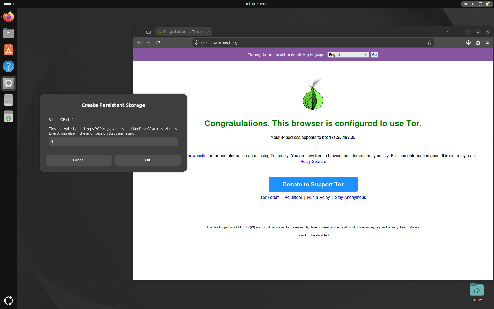

Amnesia mode
Opt-in with ./install.sh --with-amnesia. Creates an unprivileged
anon account inspired by Tails — not a full amnesiac OS.
Session design
- RAM-only home —
/home/anonis tmpfs; wiped on reboot; skeleton from/var/lib/anon-skel - Forced Tor + kill-switch — UID-scoped nftables; IPv6 dropped for anon; Tor config inlined in
/etc/tor/torrc - Desktop — dark Yaru Prussian green, green accent, location off; first-run wizard skipped
- Apps — Firefox Safest (JS off), Electrum, Feather, Kleopatra, KeePassXC, VulnScape, NymVPN
- Anon Firefox — Safest / JS off, no SOCKS proxy (transparent Tor), and DoH hard-off (
network.trr.mode=5) so DNS cannot bypass Tor - Random MAC — spoofed on anon login (Tails-style), restored on logout; boot cleanup clears leftover NM cloned-MAC
- NymVPN — daemon + GUI installed; sign in and connect in the app (no auto-login). Path while connected: apps → Tor → Nym → Internet

Persistent storage
Optional LUKS vault for secrets that should survive reboot (wallets, GnuPG, KeePassXC).
- Create once from the app menu — size + passphrase →
/var/lib/x47-amnesia/persistent.img - Unlock each session you need secrets — bind-mounts into the amnesia home
- Lock (or reboot) — closes the vault; without unlock the session stays fully amnesiac
Limitations
Host-level amnesia, not a live OS.
The base system, packages, and logs still persist. Active swap can page
tmpfs to disk. For stronger guarantees use Tails or Whonix.
Do not run Tor Browser as
anon (Tor-over-Tor).
MAC spoof is interface-wide while the anon privacy session is active.
Default login
User anon, initial password anon (expired — change on first login).
Details also in ~/README-anon.txt inside the session.